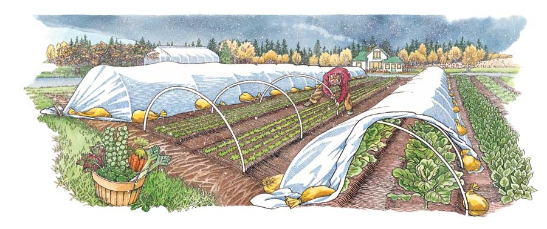
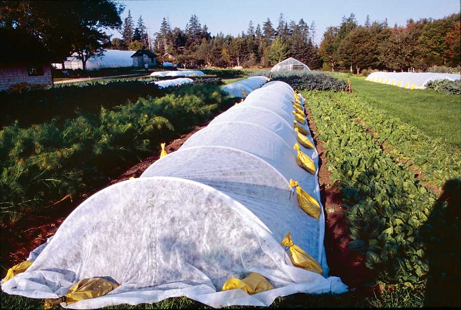
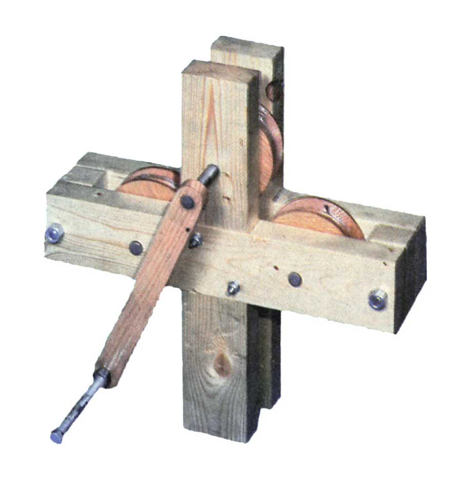
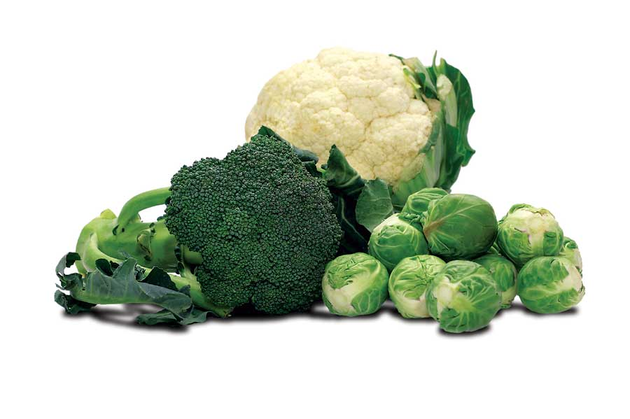

As a farmer, I’m always looking for new ideas and simple, low-cost solutions to improve production and efficiency. I have never found any activity that cannot be improved (and then improved again) by a diligent process of critical evaluation. Long before my wife, Barbara Damrosch, and I came up with the design for our low tunnels (miniature greenhouse tunnels), we had already improved our greenhouses by making them moveable, first on skids and later on wheels. But innovation is a never-ending process. The ideal solution is always less expensive, simpler to build and less complicated to manage. We consider it pleasant mental exercise to refine all aspects of our agricultural production to the essentials.
For a harvest of mature onions in early summer to sell at our farm stand, we were interested in growing the fall-planted onion varieties listed in seed catalogs. ‘Olympic,’ an overwintering onion from Johnny’s Selected Seeds, has become our favorite variety. It only keeps in storage for a few months, but that’s no problem because they all sell by the time later onions are harvestable. Because the low temperatures here in Maine are too harsh for overwintered onions to survive, we needed to grow them with protection from the weather. We decided to grow them in one of our unheated moveable greenhouse rotations.
We drilled the seed in late August, left the onions uncovered until we had harvested the last of a late sowing of greenhouse-protected lettuces just before Thanksgiving, and then moved the greenhouse to cover the onions for winter. To be sure there would be sufficient winter protection, we put an inner layer of floating row cover supported by wire wickets inside the greenhouse. In late March when we moved the greenhouse, the worst of the winter cold was over. The onions looked green and beautiful, and they matured in June to give us the early harvest we had hoped for.
But we knew we could do better. Although we had onions to sell in June, we hadn’t sold anything from that greenhouse all winter. In another mobile greenhouse rotation, we had harvested mid-September-planted spinach from mid-November right through the winter. And in April we followed that spinach crop with transplants of Tuscan kale, which we were also selling in June. The demand for winter spinach was insatiable, and we would gladly have had that onion greenhouse filled with spinach. But the onions were a great crop. We started thinking about simpler, less-expensive protection than a greenhouse.
Because the spinach was harvested all winter, it needed to be in a greenhouse in which we could walk and work comfortably. But the onions were just hibernating for the winter, so to speak, so we didn’t need to walk in and visit them. We decided they should be able to survive under lower, less expensive winter protection.
We knew the wire wickets that supported our floating row covers wouldn’t hold up under winter snow, but we thought that sturdier low tunnels might work. When we looked for materials to construct the low tunnels, we realized that 10-foot lengths of half-inch electrical conduit would be ideal. A 10-foot length of conduit bent into a half-circle with the ends inserted in the soil covers two of our 30-inch-wide growing beds with a 1-foot path in between. What we came to call “quick hoops” were born.
To make the low tunnels, we started with half-inch metal electrical conduit and made three 60-degree bends with a conduit bender to create a house shape - straight side walls (6 feet apart) and “roof” sections slanting equally to both sides. We assumed we would have enough support if we used one hoop every 5 feet. We then covered this prototype with a 10-foot-wide floating row cover held down along the edges with sandbags. We found that holding the edges of the fabric with sandbags is much less work, much faster and almost as secure as burying the edges. We fill each bag with 12 to 15 pounds of soil, sand or gravel.
A few windy days showed us a weakness in this design. The row cover fabric was stressed where it was pulled tightly against the three bends of the house-shaped hoops and was torn in a few places. We realized that a smooth, round shape for the hoops would be preferable.
Our next step was to make the hoops out of half-inch hard-plastic conduit. By making 10-inch-deep holes with an iron bar every 5 feet along the outside edges of the two beds, we could insert an end of the plastic conduit into one hole and carefully bend the conduit into a half circle, inserting the other end into the corresponding hole.
The first time we put up the plastic hoops, two people working together made the process easier: one holding the first end vertical while the other bent the conduit and inserted the second end as vertically as possible. After being used for a while, the conduit acquired a reasonably curved shape that made erecting the hoops an easier job for one person.
We put hoops over the onion beds in mid-October. Realizing the tunnels would have to survive the weight of winter snow and that we were now using plastic instead of metal conduit, we doubled the number of hoops by placing one every 2 1/2 feet along the row. We covered the hoops with row covers after we put them up, and the onions continued growing. But for the serious winter weather that would be starting by late November, we knew we needed a stronger material than the floating row cover fabric.
We had just re-covered a greenhouse, and the old plastic still had a little life in it, so we cut it into 10-foot wide strips and set them aside to use when the weather got colder. We planned to place the plastic over the fabric in order to give the low tunnels a smooth, strong surface for the snow to slide off.
The final step, completed around Thanksgiving, was to add the plastic and stiffen the structures against the weight of winter snow to come. We drove a 2-by-4 stake into the ground 3 feet from the end of each row and tied a rope tightly around the bunched end of the plastic covers (see illustration in the Image Gallery). We then pulled the ropes as tightly as we could from both ends to make the cover taut and tied the ropes to the stakes. We replaced the sandbags to hold down both the plastic and the fabric.
Both that first winter and again this past winter, the snow here on the Maine coast did not disappoint us, and the quick hoops got a real test. With the exception of one end of a row where the snow drifted excessively and pressed a few of the plastic hoops down to the ground, the 30-inch high tunnels survived a number of 18-inch snowfalls with aplomb.
Are we satisfied? Of course not. We recently perfected a tubing bender to create the ideal curved shape from half-inch metal conduit. With the proper curve, metal conduit hoops with almost straight sides extending 6 inches or so above the soil come closer to the ideal shape. We need only half as many hoops (back to the 5-foot spacing) to hold up under the snow.
Pre-bent metal hoops help in another way. The plastic conduit tends to lean in toward the beds where it’s inserted into the soil, because of the forces against it. The leaning reduces space along the edges of the beds when we use the hoops for protecting other crops that need more headroom, such as early brassicas, beets, carrots, lettuce, melons and zucchini - in both spring and fall.
We always strive to achieve our goals in the least expensive way. Quick hoops do well in that respect. Using the quick hoop system, we can give winter protection to 1,000 square feet (the size of a 20-by-50-foot greenhouse) of overwintered crops for about $100 - only 5 percent of the cost of protecting that area with a greenhouse. (The cost for our low tunnels is about 10 cents per square foot.)
Which crops work well under quick hoops? Spinach would be an obvious candidate. New England growers have traditionally sown outdoor spinach in the fall, giving it a little protection with evergreen boughs, in order to get an extra-early harvest in spring. Many other hardy greens, such as lettuce, could also be planted in the fall for early spring harvest. We have often seen our latest-planted baby leaf salads for fall harvest successfully winter under a layer of snow and come up again in the spring much sooner and more vigorously than a spring-planted crop could ever do. Because one can’t count on snow cover, quick hoops are an excellent substitute. And what about a late-fall sowing of early-spring crops such as peas, carrots or beets? Hopefully, they would survive to germinate and start growing a month or two ahead of schedule - in the protected shelter of the low tunnel. A new idea always leads us to more new ideas.
One more important thing: Think about venting the hoop tunnels so they don’t overheat when the sun returns in late winter. We simply remove some sandbags in a couple of places and use stakes with a V-notch in the top to hold the plastic and fabric a foot above the ground. By the end of March, we remove the plastic layer on each hoop tunnel and store it for future use. At that point, we have a fabric-covered low tunnel that we leave in place until it is no longer necessary or we need to move the hoops to another crop. It couldn’t be easier.
If you’d like to bend metal conduit (electrical metallic tubing) into arcs (instead of forming a corner with a common tube bender), Eliot Coleman has designed a tubing bender that will be available from Johnny’s Selected Seeds next spring. If you’d like to make your own tubing roller, read Mother’s Homemade Tubing Roller. (See photo in the Image Gallery).
|
 KRISTIN HURLIN Using these inexpensive low tunnels, you can protect plants throughout winter for a fraction of the cost of building a greenhouse. |
BARBARA DAMROSCH Eliot Coleman uses low tunnels to grow carrots, salad greens and other crops in winter - in Maine! |
 BARBARA DAMROSCH These low tunnels are covered with floating row covers. Before winter, a layer of plastic will be added. |
|
 FILE PHOTO You can learn how to make your own tubing roller in Mother’s Homemade Tubing Roller. |
 ISTOCKPHOTO/TINA RENCELJ Broccoli, cabbage and many other crops work well under quick hoops. |
|